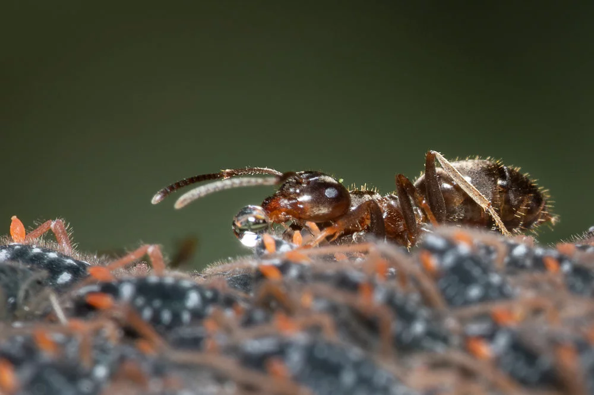
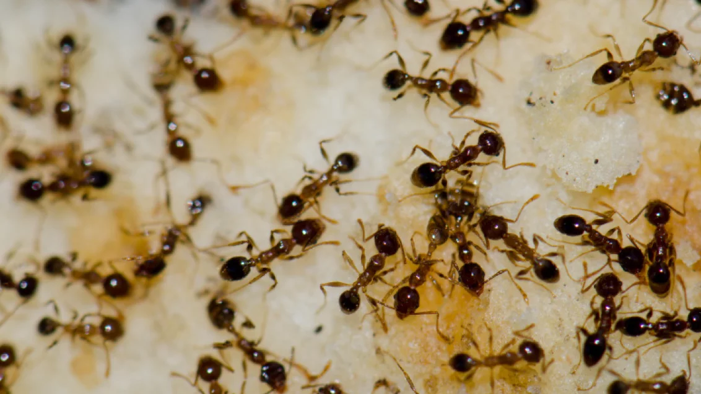
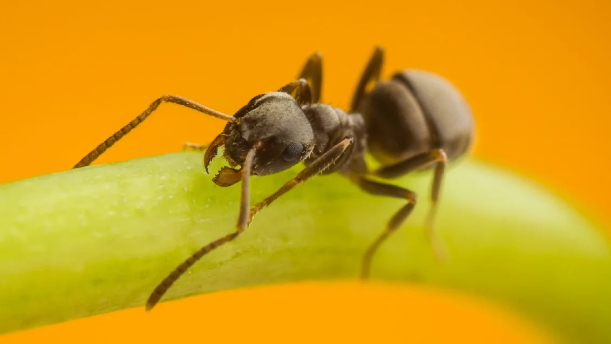

Особливе місце серед шкідників належить мурахам. З дитинства ми знаємо, що мурахи приносять людям користь,
їх називають санітарами лісу.
Усе це правильно, але не так однозначно
.
У природі існує близько 14 тисяч видів мурах, це 10–15% біомаси планети,
ареал їх поширення охоплює всі кліматичні зони, крім Антарктиди.
Тому узагальнювати не варто, адже багато залежить від виду, харчових уподобань комах, ареалу
життєдіяльності.
Усі мурахи — суспільні комахи. Серед них є три типи: робочі особини — саме з ними ми маємо справу в оселі й
на городі, самки — їх можна побачити лише всередині мурашника або під час періоду статевого розмноження
комах, та самці, які, виконавши свою функцію, переважно гинуть.
У лісі ці комахи справді корисні, а вдома? Для людей у приміщеннях мурахи шкодочинні. Неприємно бачити в
себе на столі робочих мурах, які харчуються недоїдками, але ще гірше те, що вони переносять на лапках безліч
захворювань і інфекцій — від своїх гнізд через забруднені поверхні до кухонних предметів і продуктів
харчування. Уявіть лише, що шлях цих комах пролягає по підлозі, за меблями, через санвузли, туалети — і до
вашого столу. Так мурахи спричиняють швидке псування продуктів, можуть навіть призвести до зараження
кишковими інфекціями, дифтерії, тифу й інших хвороб.
Мурахи шкодять не тільки в приміщеннях, а й поза ними. Особливо вони завдають шкоди в садах і на присадибних
ділянках. Дорослі особини потребують постійного вуглеводного харчування і з цією метою часто вирощують
попелиць, червців, щитівок, цикадок — комах, які виділяють солодку падь. З такою підтримкою популяція
шкідників активно розвивається і чисельно зростає. Тому подолати, наприклад, попелиць, не взявши під
контроль популяцію мурах на ділянці, — марна справа.
У приміщеннях ці представники пошкоджують продукти, переносять на лапках захворювання, окремі види можуть
призводити до алергічної реакції при контакті. Живуть мурахи в суспільних групах (родинах) в особливих
гніздах — мурашниках, що їх розташовують у ґрунті, під доріжками й деревами, у будь-яких приміщеннях людей.
Чорні мурахи

Розмножуються в кінці літа — на початку осені. Перші дорослі комахи відроджуються в середині наступного
літа, весь цей час самка дбає про них, споживаючи лише власні ресурси.
Шкодять бджільництву, пошкоджують різні продукти в житлі і на складах, пошкоджують листя
сільськогосподарських культур, квіткові рослини в домашніх умовах і на клумбах, можуть розносити різні
інфекційні захворювання. Не тільки охороняють попелиць, а й переносять їх, тримають у мурашниках за
несприятливих умов.
Аргентинські мурахи

Надзвичайно небезпечний, інвазивний, агресивний та успішний щодо його розповсюдження по світу вид. Дуже
агресивні, знищують аборигенні види, заповзають у ліжко, у банки з продуктами, псують їх. Наразі колонії
мурах зафіксовані в Чехії та Німеччині, висока вірогідність заселення України у найближчі роки за умов зміни
клімату.
Зупиняє цю експансію лише тепло та посухолюбність цієї комахи, але вже у США зафіксоване розселення мурахи
жалкої китайської, що є ще небезпечнішою та більш холодолюбною.
Мандрівні мурахи

Робочі особини дуже спритні. Колонії переважно невеликі, мають декілька королев. Гнізда неглибокі, зазвичай
під каменями, у сухому місці, в структурі гнізда часто є невеликі солярії для концентрації сонячного тепла
на виводку мурашок.
Пошкоджують продукти. Є інвазивним, небезпечним та агресивним видом. На теренах України зафіксований у
Криму, можливе розселення в південних областях.
Особливість боротьби з мурахами
Особливість боротьби з мурахами — те, що в усіх них різні харчові звички: хтось віддає перевагу рослинній
їжі і цукрам, хтось — білковій їжі. Такі відмінності спостерігаються навіть від мурашника до мурашника
одного виду. А от методи боротьби з ними мають бути універсальними, адже на одній території може жити кілька
видів. Прислухайтеся до рекомендацій і використовуйте комплексний підхід та принади, які, не зважаючи на
особливості й уподобання в харчуванні, мурахи однаково споживали і препарати діяли.
Боротися з цими комахами треба поетапно, комбінуючи різні методи.
-
Приберіть усі можливі залишки їжі, доступні цукри й білки, ретельно вимийте поверхні. На присадибній
ділянці проведіть обробку інсектицидним засобом, бажано системної дії, від сисних комах, коштом яких
харчуються мурахи.
-
Обробіть поверхні в приміщенні спреями широкого спектра дії, які довго залишаються на поверхні і не дають
комахам-розвідникам знову прийти на територію. Такі спреї захистять вашу оселю й від інших шкідників,
як-от таргани й лусочниці.
-
Використовуйте як приманку гелі і гранули, розкладайте їх на можливих шляхах переміщення мурах на
однаковій відстані (вздовж їхніх стежок, адже мурахи рухаються феромонними стежками і майже не змінюють
їх), у місцях можливого розташування гнізд, у місцях захóду комах у приміщення, на виходах із їхніх
гнізд, уздовж стін, у щілинах і тріщинах. Важливо не мити поверхні після розкладання принади! Так само
розкладають приманки навколо приміщень, на присадибних ділянках, треба тільки захистити оброблену
територію від дощу/води та від прямих сонячних променів, наприклад за допомогою плитки.
Такі засоби дуже ефективні, адже комахи поїдають препарат і не гинуть негайно, а повертаються в мурашник і
заражають решту популяції, обмінюючись їжею через так званий «соціальний шлунок», ділячись спожитим з іншими
комахами. Летальний ефект виникає в наступні години після проковтування. Видимий ефект спостерігається через
один тиждень. Повне руйнування гнізда настає через 2–4 тижні.